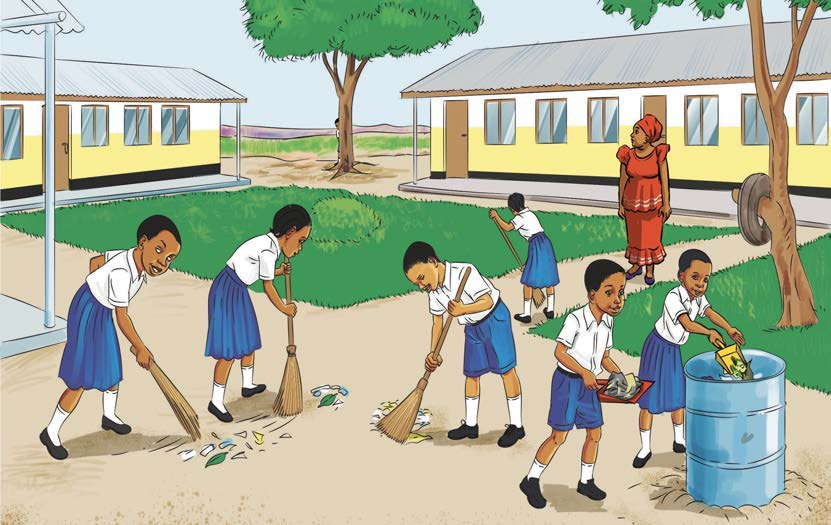

Andika upya habari ya Usafi wa mazingira kwa herufi kubwa na alama sahihi za uandishi; tumia eneo la kuandikia, kibodi au Breli.
Usafi wa mazingira
Habari ya sita Usafi wa mazingira Shule ya Msingi Ng’ambo ina mazingira safi Kila siku, wanafunzi hufanya usafi kabla ya kuingia madarasani Kashoni anasoma katika shule hiyo Alikuwa hapendi kabisa kufanya usafi Siku moja, wanafunzi walipokuwa wakifanya usafi, Kashoni alitoroka. alikwenda kujificha nyuma ya mti mkubwa Mwalimu wa zamu alimwona Kashoni akijificha Alimwita akamwambia kwa upole kuwa usafi ni jambo muhimu. Tukiacha mazingira machafu, tunaweza kuugua Maneno ya mwalimu yalimsaidia Kashoni kujua umuhimu wa usafi. Alitambua kuwa usafi wa mazingira unasaidia kuzuia magonjwa Tangu siku hiyo, Kashoni alianza kushiriki kufanya usafi.
